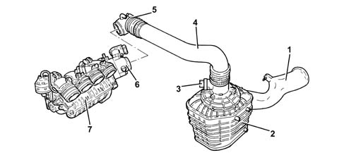
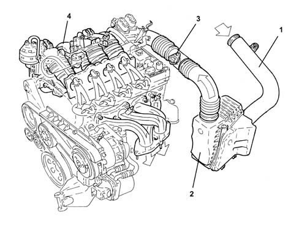
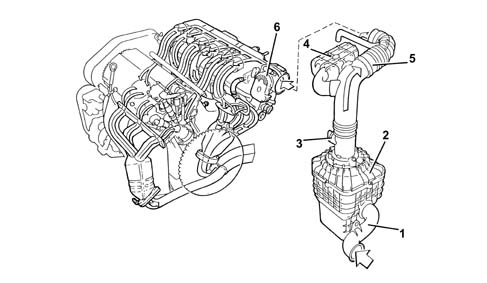

1048A VACUUM AIR CIRCUIT
- Path
- Descriptions > 10 ENGINE UNIT > 1048 ENGINE AIR SUPPLY CIRCUIT > 1048A VACUUM AIR CIRCUIT
- Kind
- system description
- Applies to
- engines: 1.8 T.SPARK, 2.0 JTS, 3.2 V6; all production periods
- Interactive page
- https://sloeber94.github.io/elrnDB-aGt/en/#/125000279
Applies to: engines: 2.0 JTS; all production periods
OPERATION
VIEW OF ASSEMBLY

1 - Cold air intake
2 - Air cleaner assembly
3 - Air flow meter
4 - Rigid pipe
5 - Corrugated hose
6 - Throttle body with D.V.L.
7 - Modular intake manifold
Applies to: engines: 1.8 T.SPARK; all production periods
AIR SUPPLY SYSTEM

1 - Cold air intake
2 - Air cleaner assembly
3 - Air flow meter [1056B]
4 - Modular intake manifold [1072D].
Applies to: engines: 3.2 V6; all production periods
OPERATION
Assembly view

1 - Cold air intake for air filter
2 - Air cleaner assembly
3 - Air flow meter
4 - Resonator
5 - Corrugated hose
6 - Throttle body with D.V.L.